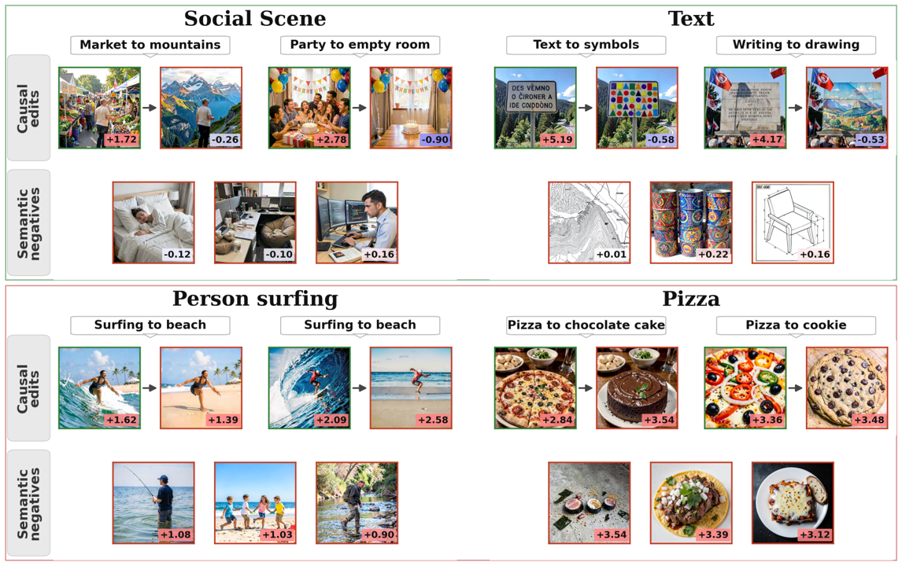
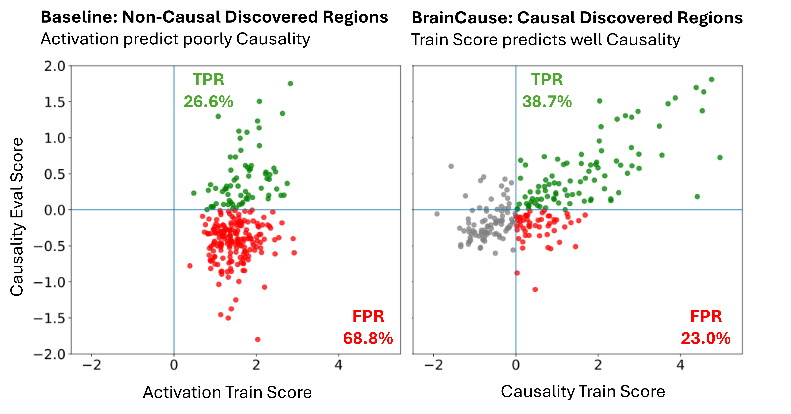
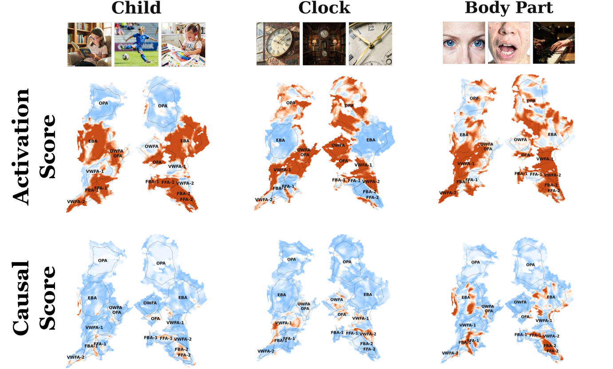
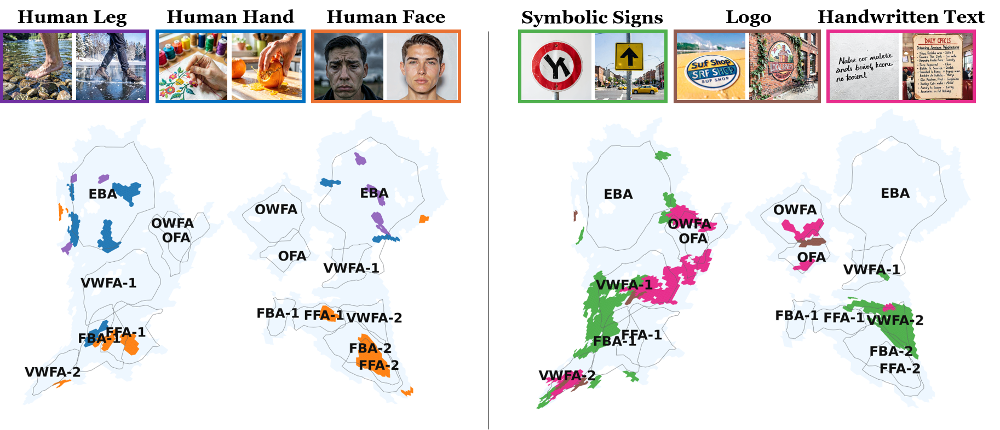
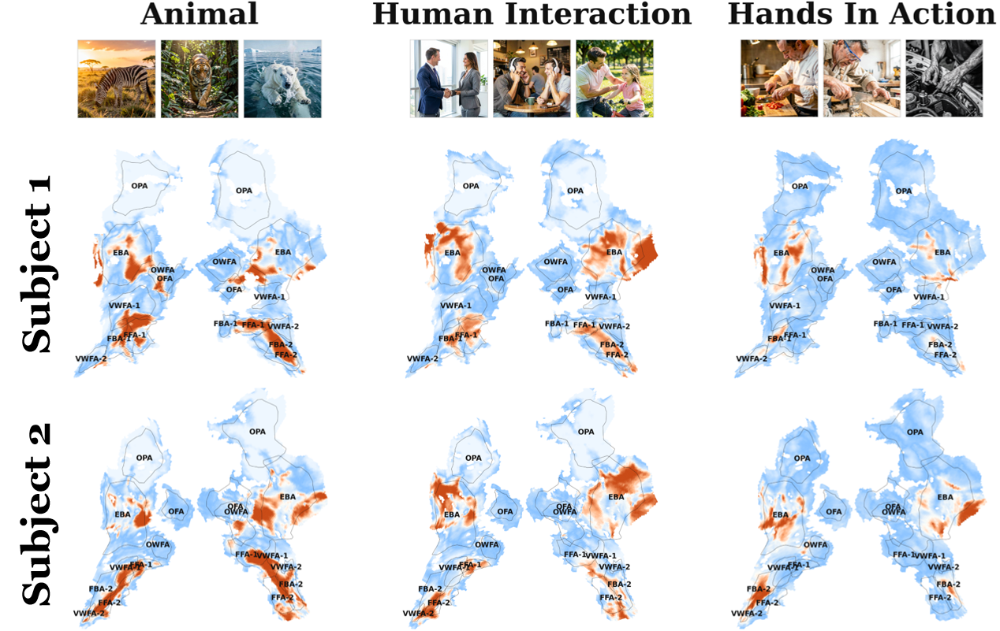

From Activation to Causality
Discovery of Causal Visual Representations in the Human Brain
* Equal contribution
1Weizmann Institute of Science2Massachusetts Institute of Technology
Searching by activation alone can highlight correlated responses; causal testing isolates locations with concept-specific evidence.
BrainCause Builds Controlled Visual Evidence
Given a target concept, BrainCause constructs a causal dataset designed to isolate the concept from correlated visual and semantic factors. The dataset includes positive images, semantic negatives, and counterfactual negatives in which the target concept is removed or replaced while preserving the rest of the image.

Causal Testing Examples
We compare causally discovered regions with regions found by activation alone. BrainCause regions respond strongly to positive images but drop for counterfactual edits and semantic negatives. Activation-discovered regions often remain active for these negatives, revealing false positives driven by correlated cues rather than the target concept.

Activation Alone Produces Many False Positives
High activation is not always causal: it can reflect correlated visual or semantic factors rather than the target concept. Each point represents one tested concept, comparing its activation-based discovery score with held-out causal evaluation. Green points are causally validated discoveries; red points are false positives with positive activation but negative causal evidence. The result shows that activation alone is an unreliable discovery signal, motivating BrainCause's causal criterion.

Discovered Representations
We compare BrainCause causal scoring with activation-based localization for Child, Clock, and Body Part. Representative positive images appear above each concept, and warmer colors indicate stronger evidence. Across these examples, activation produces broad high-response patterns, while causal scoring yields more selective maps by suppressing responses driven by correlated visual or semantic cues.

Fine-Grained Organization
We compare causal maps for related concepts, with colors marking voxels that show high causal evidence for each concept. Nearby concepts form distinct spatial patterns: body concepts separate across face- and body-selective regions, while text-like concepts separate across word- and object-related visual areas.

Cross-Subject Consistency
We compare BrainCause causal maps for the same concepts across NSD subjects. Columns show concepts, rows show subjects, and warmer colors indicate stronger causal evidence. Despite individual variability, corresponding concept-specific regions appear across subjects.

BibTeX
@article{golbari2026braincause,
title = {From Activation to Causality: Discovery of Causal Visual Representations in the Human Brain},
author = {Golbari, Yuval and Wasserman, Navve and Cosarinsky, Matias and Beliy, Roman and Oliva, Aude and Torralba, Antonio and Irani, Michal and Rott Shaham, Tamar},
journal = {},
year = {},
url = {},
note = {}
}